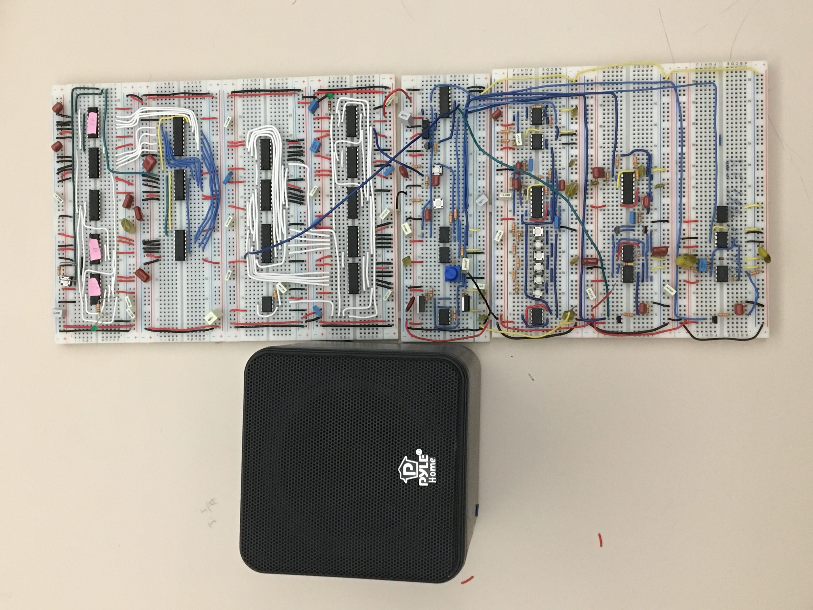
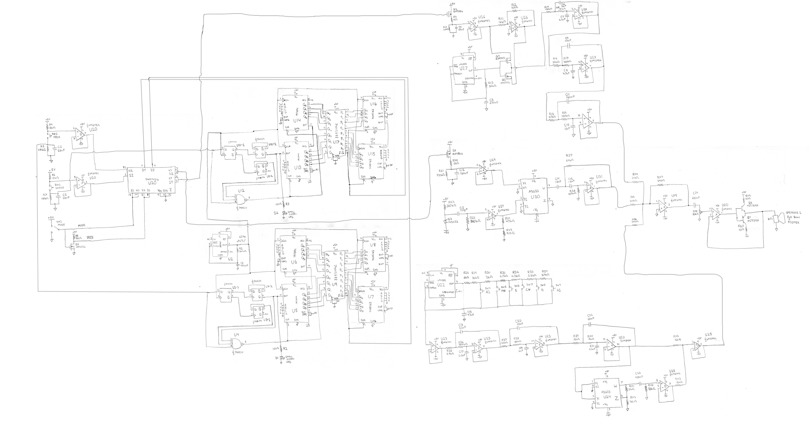
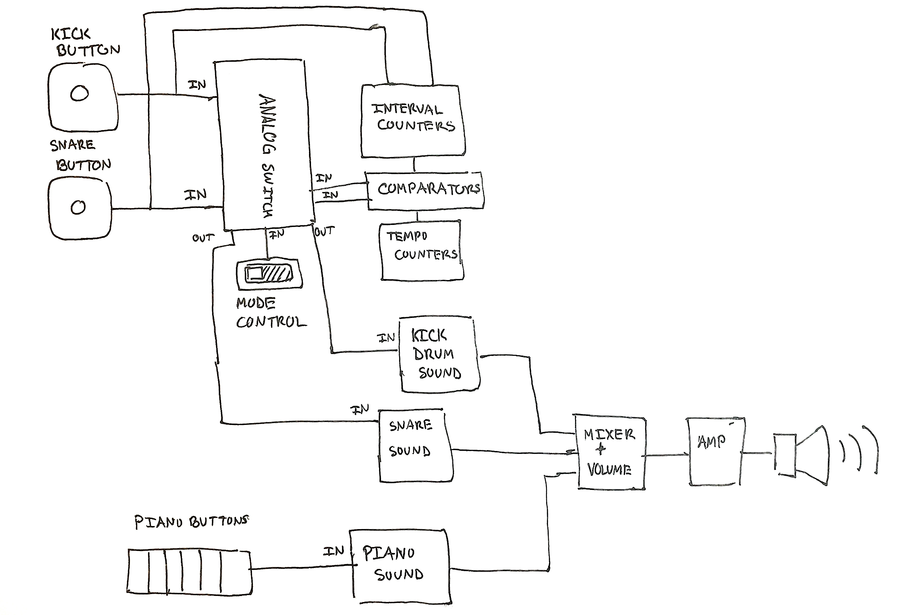
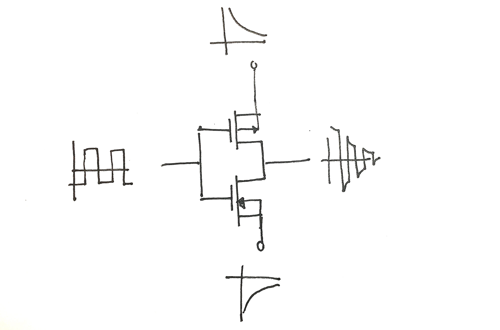
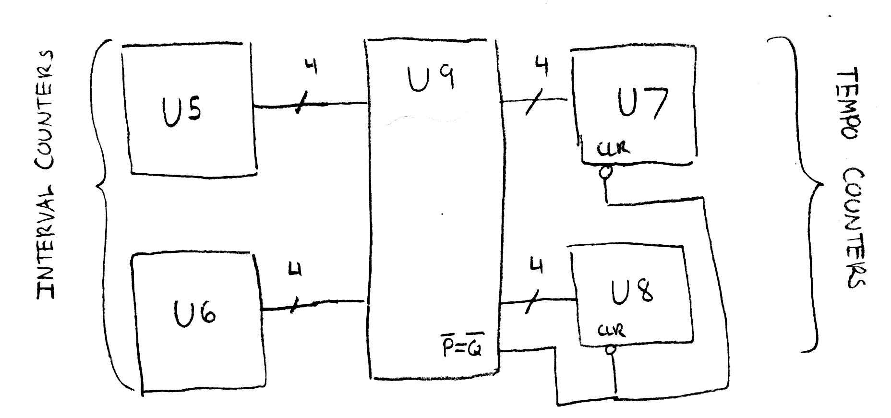

Engineering Sciences 52: The Joy of Electronics was the introductory electronics course that I took in fall of 2017. It was my first opportunity to design analog and digital circuits. For my final project I made Autodrum, a drum machine and piano with simple playback functionality.
The finished Autodrum circuit
Full circuit diagram. Click for larger version
Block diagram
Autodrum has four main components
The piano circuit consists of a 555 timer attached to a button-controlled resistor ladder. Pressing the buttons changes the RC constant that determines the frequency of the timer, which in turn changes the frequency of the sound output. I fed the pseudo-triangular wave timing signal of the 555 timer into three second-order filters, which output a very close approximation of a sine wave. That sine wave is fed into an analog multiplier twice in order to produce a squared sine wave, which has a frequency twice that of the initial sine wave. Combining these back together created a pleasant sound that had the first and second harmonics of the chosen notes.
The kick drum circuit uses a 555 timer to create a low-frequency square wave. This square wave is fed into two MOSFETs that use exponential decay signals from a capacitor to create a decaying square wave.
How we get a decaying square wave
The decaying square wave signal is then passed into three second order low-pass filters, which leaves us with a decaying sine-like wave.
The snare drum sound is white noise modulated with a decaying envelope. The white noise is created using a Zener diode (D3), a high-pass filter, and amplification. This is fed into an analog multiplier, where it is multiplied with an exponential decay signal from a capacitor to give us a white noise signal that starts out loud and quickly quiets down.
To make sure that all the signals came out of the speaker, I used an op-amp to sum the signals from the three instruments. I passed the summed signal to a high-pass filter so that no DC signal would be fed to the speaker, and I used a potentiometer (R48) as volume control. The potentiometer-attenuated signal was fed into a Class B push-pull amplifier in order to supply the current necessary to drive the low-impedance speaker.
Note: Even after learning about n-type and p-type silicon and the material science behind semiconductors, bipolar junction transistors are still black magic to me.
While a microcontroller would have been much neater than the mess of wires above, I wouldn't have nearly as much practice as I do now with digital circuitry and finite state machines. The digital circuitry allows the user to press a drum button a couple times and then have the circuit automatically play back the drums at the same rate that the user played them. The circuit does this using one counter to measure the interval between button presses and then another counter to loop back to zero every time it has counted out the prescribed interval.
One of the playback circuits
The timer in the digital circuitry ran at around 64 Hz. Suppose, for example, that the user tapped the drum button twice at 120 BPM. On the first press, the interval counter (U5 and U6) would start counting at 64 Hz. After half a second, the user presses the button again, and the interval counter stops with the value 31 at its binary output. This output is fed to an 8-bit equality comparator (U9). In the meantime, the tempo counter (U7 and U8) is constantly counting from zero to 255 over and over again. The output of the tempo counter is also fed to the 8-bit equality comparator. When the two outputs are the same, the equality comparator sends a signal that clears the tempo counters and triggers the drums. Because the interval counters are fixed outputting 31, the tempo counters clear every 32 cycles, and the drums are triggered every time the tempo counters clear, the drums play back automatically at 120 BPM.
There were a couple issues with the user experience of this device. If I had to built it again, I would have used separate power supplies for the digital and analog circuitry so that I could have a higher-voltage supply for the speaker. As it was, the sound coming out of the device was pretty quiet. The snare drum sound was very quiet because it the signal would start clipping when I amplified it. With more time, I would have built a compressor. The time resolution of the digital circuitry was also too high; it made it impossible to sync up the kick and snare drums. I think 16 Hz or 8 Hz would be more appropriate.
Overall, though, this was a really fun experience. I went from knowing how to make a flashlight to making a simple drum kit in a few months, and I got a lot of practice creating proper documentation.
ES52 Teaching Fellow, Mr. Dragon Bear
{kind=link}